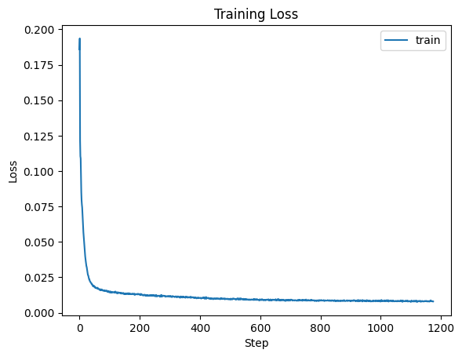
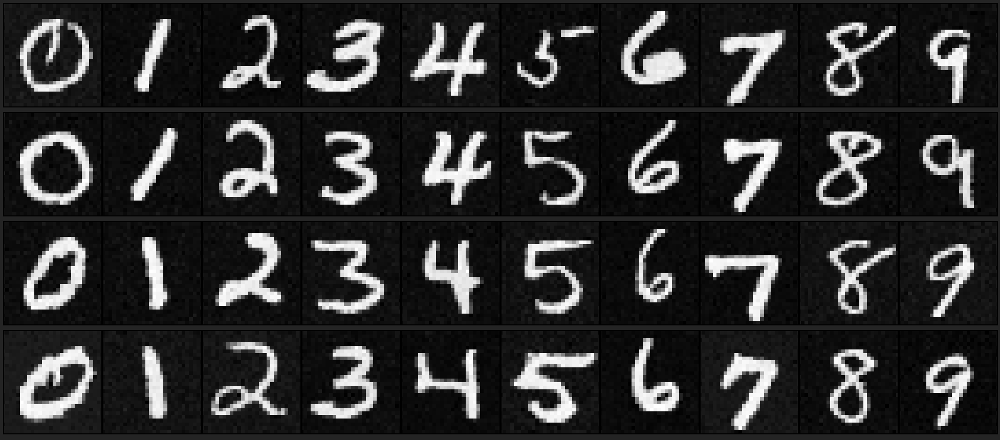

Project 5
Overview
This project was all about Diffusion and the neural network implementation, UNets, which allow us to denoise an image of random noise into an actual image.
Project 5A
Overview
The first part of the project uses the DeepFloyd model's parameters and implementation to make our own denoisers and also do different things with these denoisers. The focus here is to rebuild the sampling model using the already trained model. Throughout this project, I always reseed with seed=1729 before running any sampling/random process.
1.0: Using DeepFloyd
Approach
For this first section, we only had to make a prompt and obtain its text embedding, which the DeepFloyd model also provides, and sample the model for the following images. The prompts used are: “an oil painting of a snowy mountain village", “a man wearing a hat", and “a rocket ship". The model has two parts: the first one samples the image and the second one upsamples the output of the first part since this output is only 64 x 64 pixels. Furthermore, by increasing the number of steps that the model can perform in the sampling and upsampling process, the better/more detailed images it can generate. This can be seen in the rocket images where the number of inference steps is 50.
Results
I made both images appear to have the same size but notice that the pictures on the left are more pixelated; these are the ones that were not upsampled.
an oil painting of a snowy mountain village
a man wearing a hat
a rocket ship (20)
a rocket ship (50)
1.1: Forward Process
Approach
For this section, we implement the noising function which adds a certain amount of noise to an image. The scaling is determined by already trained parameters in the DeepFloyd model. The formula for this is: \[ x_t = \sqrt{\overline{\alpha}_t} \, x_0 + \sqrt{1- \overline{\alpha}_t} \, \epsilon \qquad \epsilon \sim \mathcal{N}(0,1) \]
where \(t\) can go from 1 to 1000, and a higher \(t\) corresponds to a noiser image. Using the provided test image, add noise for \(t = 250, 500, 750\).
Results
1.2: Classical Denoise
Approach
Usually, we would denoise a picture by applying a Gaussian blur filter (low pass filter with kernel size 7 and sigma 2) to the image. We do this because noise tends to be high frequency, so it gets filtered out whenever we apply this blur. Below are the results.
Results
1.3: One-Step Denoise
Approach
The denoising done previously is not very good, so let's use the Diffusion model. The Diffusion model can predict the amount of noise in the image so that it can be removed. This is where the UNet, the main neural network component/architecture, of the model resides. It was trained so that it can predict the noise in an image given the noisy image and the current time step \(t\). This uses the same formula as 1.1, but we solve for \(x_0\), so we have \[ \hat{x}_0 = \frac{1}{\sqrt{\overline{\alpha}_t}} (x_t - \sqrt{1- \overline{\alpha}_t} \, \hat{\epsilon}) \] where \(\hat{\epsilon}\) is the predicted noise in the image. Notice that this will be an approximate image since the model is making a prediction. This can be seen below where the original noisier image looks very different to the original. However, the model removed the noise a lot better than Gaussian blurring did.
Results
1.4: Iterative Denoise
Approach
Diffusion models are designed to iteratively denoise an image, step-by-step, instead of just taking one huge leap. We implement that part of the model here using the following formula:
\[x_{t'} = \frac{\sqrt{\overline{\alpha}_{t'}} \, \beta_t}{1-\overline{\alpha}_{t}}\hat{x}_0 + \frac{\sqrt{\alpha_t}(1-\overline{\alpha}_{t'})}{1-\overline{\alpha}_{t}}x_t + v_\sigma \]
where \(t > t', \,\, \alpha_t = \overline{\alpha}_t/\overline{\alpha}_{t'}, \,\, \beta_t = 1-\alpha_t\), \(\hat{x}_0\) is the current prediction for the original image using \(x_t\), so the equation written in section 1.3, and \(v_\sigma\) is the predicted variance in the noise. Recall that we want to go from larger to smaller \(t\).
These images were made by firstly noising the original image to time 690 and then iteratively denoising as explained above. Note that it is possible to skip values of \(t\), so our schedule decreases \(t\) not by 1 but by 30 at each iteration.
Results
Some samples of the iterative denoising process
| t=690 |
t=540 |
t=390 |
t=240 |
t=90 |
 |
 |
 |
 |
 |
Comparing the three different denoising methods
| Blurring |
One-Step |
Iterative |
 |
 |
 |
1.8: Visual Anagrams
Approach
The main idea behind anagrams is that we want a picture to contain two pictures. One of them is visible in one direction and flipping the image the other way around causes the second one to become visible. This can be done by “blending" together the predicted noise during the sampling process for two different prompts. Mathematically, the new noise estimate is calculated by: \[ \epsilon_1 = \text{UNet}(x_t, t, p_1), \qquad \epsilon_2 = \text{flip}(\text{UNet}(\text{flip}(x_t), t, p_2)), \qquad \epsilon = (\epsilon_1 + \epsilon_2) / 2 \] where flip(\(\cdot\)) flips an image and \(p_1,p_2\) are the two different prompts. Everything else is done the exact same way as in CFG.
Results
I had to sample many times using different seeds until I got decent enough results. (+0, +6, +0) respectively added to the base seed=1729
| an oil painting of an old man |
an oil painting of people around a campfire |
 |
 |
| a painting of abraham lincoln's face |
a painting of a lion |
 |
 |
| a golden eagle |
a fighter jet |
 |
 |
1.9: Hybrid Images
Approach
The main idea behind hybrid images is that we want a picture to contain two pictures again. One of them is visible from far away (contains the low frequencies of the image) and the other is visible up close (contains the high frequencies of the image). This can be done by “blending" together the predicted noise during the sampling process for two different prompts. Mathematically, the new noise estimate is calculated by: \[ \epsilon_1 = \text{UNet}(x_t, t, p_1), \qquad \epsilon_2 = \text{UNet}(x_t, t, p_2), \qquad \epsilon = f_{\text{LP}}(\epsilon_1) + f_{\text{HP}}(\epsilon_2) \] where \(f_{\text{LP}}, f_{\text{HP}}\) are a low pass and high pass filters, respectively. These were implemented with Gaussian blurring using kernel of size 33 and sigma 2 for the low pass and kernel size 11 and sigma 2 for the high pass (image - low pass is the high frequencies). Everything else is done the exact same way as in CFG.
Results
Similarly to 1.8, I had to sample many times using different seeds until I got decent enough results. (+0, +19, +4) respectively added to the base seed=1729
| a lithograph of a skull |
a lithograph of waterfalls |
 |
|
| a polar bear |
a dense snowy forest |
 |
|
| a painting of a green bird |
a painting of tree leaves |
 |
|
Project 5B
Overview
The second part of the project is implementing the UNet architecture, including time and class conditioning, and training the neural net on the MNIST dataset to essentially generate new images that would belong to the MNIST dataset.
2.1.1 and 2.1.2: Training and Sampling the Unconditioned UNet
Approach

This image is taken directly from the CS 180 website specifications. For this first part of the project, I implemented this neural network architecture using PyTorch nn modules. The neural net minimizes the MSE Loss: \[ \mathbb{E}_{x,z} \| D_\theta(z) - x \|^2 \] where \(x\) is the image in the MNIST dataset, \(z = x + \sigma\epsilon \) is the noised image where \(\epsilon \sim \mathcal{N}(0,I) \) and \( \sigma \in \{ 0.0,0.2,0.4,0.5,0.6,0.8,1.0 \} \). The model \(D_\theta(\cdot)\) then tries to recover the original image from the given noised image. For training, \(\sigma = 0.5\) fixed, the hidden layer has dimension 128, and use Adams optimizer with \(10^{-4}\) learning rate.
Results
Figure 3: Images in the MNIST dataset noised at different levels, according to \(\sigma\) above.
Figure 4: Training Loss

| Figure 5: Model Output after 1st Epoch on Test images |
Figure 6: Model Output after 5th Epoch on Test images |
| |
|
Figure 7: Model Output - out of distribution
This means that the input to the model is an image with \(\sigma\) different to 0.5.
2.2.1 - 2.2.3: Training and Sampling the Time-Conditioned Diffusion Model
Approach

This image is taken directly from the CS 180 website specifications. For this part of the project, I implemented this neural network architecture using the existing implmentation for the UNet in the previous section and added the necessary modules for time conditioning as outlined above. This UNet will predict the noise that is present in the image, instead of actually trying to recover the image. Mathematically, \[ \mathbb{E}_{\epsilon,z} \| \epsilon_\theta(z) - \epsilon \|^2 \]
Recall that diffusion iteratively denoises images, so we will again use the following equation: \[ x_t = \sqrt{\overline{\alpha}_t} \, x_0 + \sqrt{1- \overline{\alpha}_t} \, \epsilon \qquad \epsilon \sim \mathcal{N}(0,1) \] Specifically, we use it in the following algorithm for training the time-conditioned UNet as we want to learn the noise in an image given the current time:

For training, \(\sigma = 0.5\) fixed, the hidden layer has dimension 128, and use Adams optimizer with \(10^{-3}\) as the starting learning rate and an exponentially decaying learning rate. Then, to sample from the trained UNet, follow

Results
Training Loss for Time-Conditioned UNet
Sampling Outputs at different stages of training
| Epoch 1 |
| |
| Epoch 5 |
| |
| Epoch 10 |
| |
| Epoch 15 |
 |
| Epoch 20 |
| |
2.2.4 and 2.2.5: Training and Sampling the Class-Conditioned Diffusion Model
Approach
For this last section of the project, I implemented the same neural network architecture using the existing implmentation for the UNet in the previous section but also added the necessary modules for class conditioning. This UNet also predicts the noise that is present in the image, instead of actually trying to recover the image. Mathematically, \[ \mathbb{E}_{\epsilon,z} \| \epsilon_\theta(z) - \epsilon \|^2 \]
The training algorithm encodes the feature/class of each image as a one-hot vector and performs dropout with probability 0.1.

For training, the hidden layer has dimension 64, and use Adams optimizer with \(10^{-3}\) as the starting learning rate and an exponentially decaying learning rate. Then, to sample from the trained UNet, follow

Results
Training Loss for Class-Conditioned UNet
Sampling Outputs at different stages of training
| Epoch 1 |
| |
| Epoch 5 |
| |
| Epoch 10 |
| |
| Epoch 15 |
|  |
| Epoch 20 |
| |
Final Thoughts
Bells and Whistles
I did not implement any B&W.
What I enjoyed
Simply learning and having the opportunity to make our own small scale diffusion model in Part B was engaging and interesting. The first part of the project was also fun as I learned how to play around with the predicted noise to make different kinds of images.